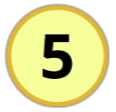
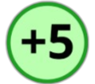

Thronebound: cartas e batalhas
O objetivo do jogo é derrotar a dupla inimiga, utilizando as habilidades dos personagens e cartas distribuídas.
Para jogar são necessárias duas duplas.
O jogo contém:
- 1 tabuleiro;
- 4 totens de personagens;
- 24 cartas, sendo: 4 cartas de personagens, 4 cartas fixas (armas), uma para cada personagem e 16 cartas de suporte;
- 240 marcadores: 40 com valor '10', 40 com valor '-10', 40 com valor '+10', 40 com valor '5', 40 com valor '-5' e 40 com valor '+5'.
- 4 dados de 20 lados (d20).
Conheça os personagens

Thoma, o bardo
Thoma é um poeta e bardo, que vive da música, viajando e cantando pelas tavernas em seu caminho. Gosta de inventar histórias grandiosas e um pouco distorcidas da realidade, mas mesmo assim não deixa de ser um grande artista.

Ayla, a viking
Ayla é uma guerreira desde pequena, seu pai lhe ensinou todas as técnicas para uma boa luta, desde como usar uma espada e um machado, até um escudo. Mesmo tendo treinado para a frente de batalha, ela tenta ser o mais sorrateira possível.

Alyss, a besteira
Alyss é uma caçadora que gosta de viver no silêncio da floresta. Com sua besta e mira esplêndida sua caçada sempre traz sucesso. Iniciou sua carreira como caçadora, mas depois de tanto treino, resolveu tornar-se uma caçadora de recompensas renomada.

Carmesin, a feiticeira
Carmesim é uma feiticeira misteriosa extremamente habilidosa, suas poções e magias fazem todos ter pesadelos. Sua origem é incerta, mas como ela é a curandeira da vila, ninguém se atreve a questionar seus conhecimentos.
Contadores:
Perda de vida
.png)
Contador reserva
ATQ/ DEF adicional
- ATQ: valor do ataque original do personagem;
- DEF: valor da defesa original do personagem (podendo aumentar com armas, cartas ou personagens suporte);
- DPS: será o responsável por infligir maior dano;
- Suporte: auxilia o DPS, podendo aumentar seu dano (ataque) ou defesa, por exemplo;
- HP: total de vida do personagem;
- Bônus de ataque: valor bônus acrescentado ao ataque que é sorteado pelo dado.
Organizando o jogo
- Inicialmente definem-se os pares (4 pessoas, 2 contra 2) ou um único par (2 pessoas, 1 contra 1). Em seguida, a dupla deve escolher um par de personagens, a saber: Thoma + Ayla ou Alyss + Crimson (cada integrante escolhe seu personagem específico);
- O jogador recebe o totem do personagem, juntamente com a sua carta, a carta fixa (arma) indicada na carta do personagem e um dado de 20 lados. Para iniciar, cada dupla joga um dado e aquele que tirar o maior número começa a partida;
- Após definir a ordem e receber os objetos citados acima, sorteia-se uma carta de suporte para cada jogador (2 cartas suporte por dupla). As restantes devem ser embaralhadas, colocadas em um monte e deixadas ao lado do tabuleiro.
Regras iniciais
- Durante o jogo, o jogador deve “narrar” suas jogadas, dizendo quem irá atacar e como irá atacar (qual ataque ou habilidade irá utilizar);
- Depois de usadas, as cartas devem ser colocadas em um monte de “descarte”, para quando acabarem as do monte de compra, serem embaralhadas e colocadas no monte novamente;
- A carta de personagem “Carmesim, a feiticeira” possui a habilidade de invocar a carta de suporte “Sombra”. Ao fazer isso, a carta de suporte deve ser entregue ao jogador com a carta deste personagem, mesmo estando com outro jogador ou na pilha de descarte;
- Cada carta contém instruções de uso. Fique atento à descrição! Nela contém seu efeito e a quantidade de turnos que pode durar;
- O turno inicia-se com a dupla vencedora do sorteio de dados. Termina ao chegar novamente na vez dessa mesma dupla;
- Em cada turno, as duas duplas jogam uma vez. Na vez da dupla, cada jogador pode jogar apenas uma vez, de acordo com sua vontade, não excedendo as regras;
- As duplas/jogadores não podem pegar uma carta de suporte do monte no primeiro turno. Nos próximos turnos, a dupla deve pegar somente uma carta de suporte quando for sua vez de jogar;
- O jogador só pode realizar uma jogada por turno, exceto o jogador que estiver jogando com mais de um personagem. Este deve jogar pelos dois no mesmo turno;
- O turno do jogador é encerrado ao atacar.
Iniciando o jogo
- No início de cada turno (exceto o primeiro de cada um) a dupla deve comprar 1 carta suporte do monte;
- As cartas suporte devem ser utilizadas após a compra de uma carta do monte e antes de iniciar o seu ataque;
- Não há limite para a utilização de cartas suporte em um turno. Converse com a sua dupla para decidirem a melhor maneira de usá-las a cada turno!
- Os ataques são feitos utilizando os bônus de ATQ ou as habilidades do personagem;
- Para atacar, o jogador escolhe o tipo de ataque: ataque fixo + bônus de ATQ + carta fixa (arma) ou ataque fixo + uma habilidade do personagem + carta fixa (arma);
- Após definir qual ataque fará, o jogador deve jogar o dado conforme as porcentagens (a porcentagem de cada personagem está descrita em sua carta):
- 25%: números de 1 a 5;
- 50%: números de 6 a 10;
- 75%: números de 11 a 15;
- Caso o número do dado seja diferente dos citados acima, o jogador não recebe nenhum bônus e nenhuma habilidade do personagem.
- Para marcar o dano sofrido ou bônus de defesa/ataque disponibilizado por alguma carta, o jogador deve utilizar os contadores e colocá-los na carta de seu personagem;
- O jogo acaba quando ambos os jogadores de uma dupla estiverem com 0 de vida ou se renderem.